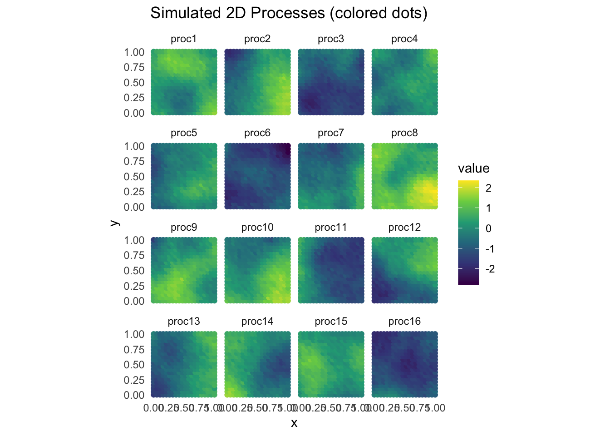
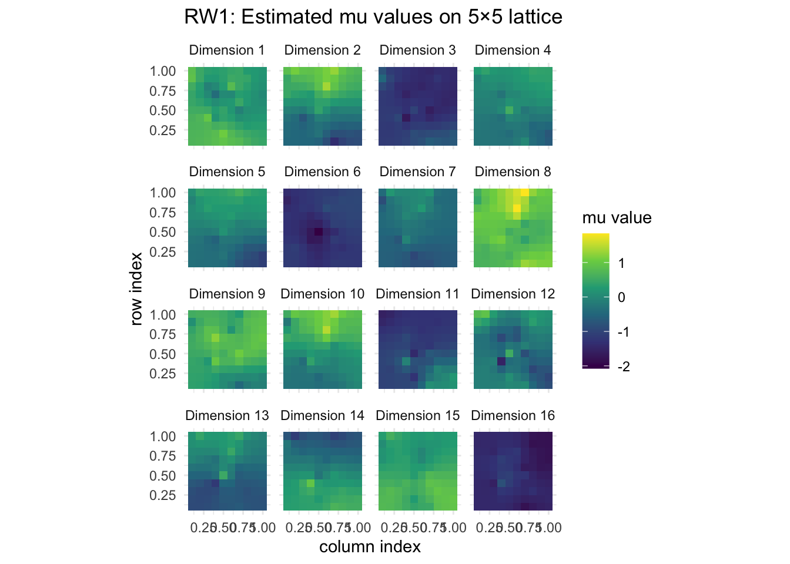
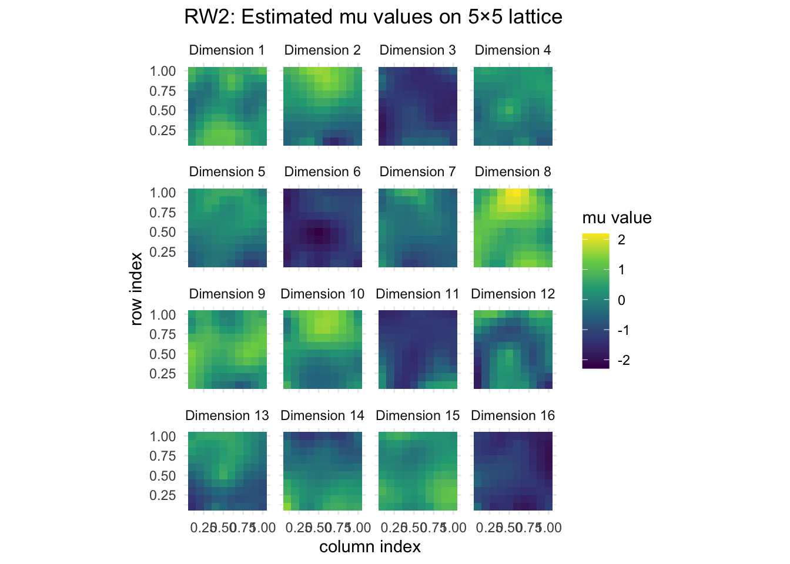
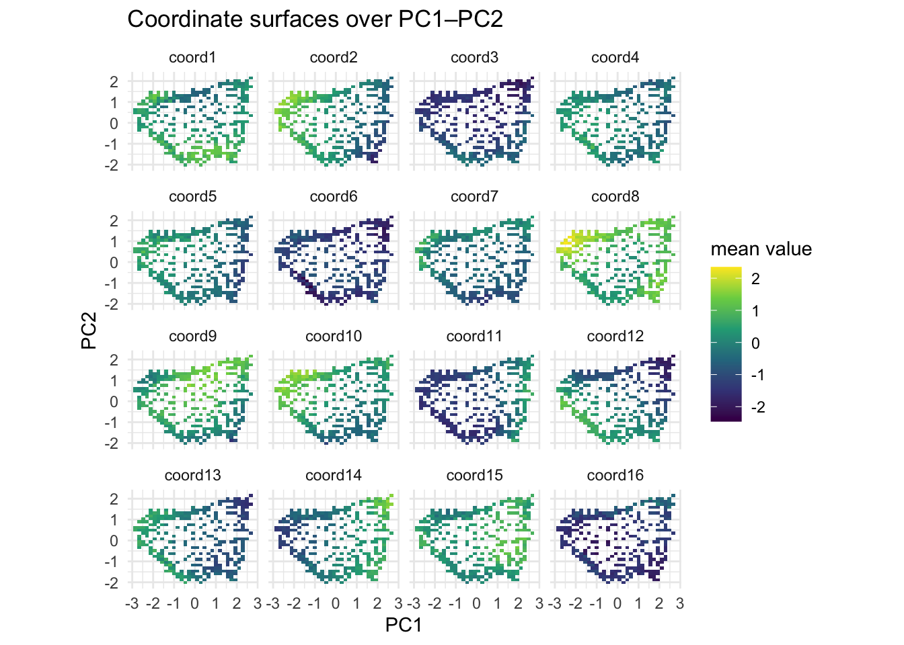

Last updated: 2025-07-27
Checks: 7 0
Knit directory: InferOrder/
This reproducible R Markdown analysis was created with workflowr (version 1.7.1). The Checks tab describes the reproducibility checks that were applied when the results were created. The Past versions tab lists the development history.
Great! Since the R Markdown file has been committed to the Git repository, you know the exact version of the code that produced these results.
Great job! The global environment was empty. Objects defined in the global environment can affect the analysis in your R Markdown file in unknown ways. For reproduciblity it’s best to always run the code in an empty environment.
The command set.seed(20250707) was run prior to running
the code in the R Markdown file. Setting a seed ensures that any results
that rely on randomness, e.g. subsampling or permutations, are
reproducible.
Great job! Recording the operating system, R version, and package versions is critical for reproducibility.
Nice! There were no cached chunks for this analysis, so you can be confident that you successfully produced the results during this run.
Great job! Using relative paths to the files within your workflowr project makes it easier to run your code on other machines.
Great! You are using Git for version control. Tracking code development and connecting the code version to the results is critical for reproducibility.
The results in this page were generated with repository version 47c4b7b. See the Past versions tab to see a history of the changes made to the R Markdown and HTML files.
Note that you need to be careful to ensure that all relevant files for
the analysis have been committed to Git prior to generating the results
(you can use wflow_publish or
wflow_git_commit). workflowr only checks the R Markdown
file, but you know if there are other scripts or data files that it
depends on. Below is the status of the Git repository when the results
were generated:
Ignored files:
Ignored: .DS_Store
Ignored: .Rhistory
Ignored: .Rproj.user/
Ignored: analysis/.DS_Store
Ignored: analysis/site_libs/
Ignored: code/.Rhistory
Untracked files:
Untracked: analysis/explore_trajectory.rmd
Untracked: code/rw2_warmstart.R
Untracked: code/simulate2D_fields.R
Untracked: code/smoother_experiment.R
Untracked: code/stochasticEM.R
Untracked: explore_permutation.R
Untracked: various figures/
Untracked: warmstart.png
Untracked: without_warmstart.png
Unstaged changes:
Deleted: all_celltypes_umap.png
Modified: analysis/explore_pancrea.rmd
Modified: analysis/explore_smoothEM.rmd
Modified: code/general_EM.R
Modified: code/plot_ordering.R
Modified: code/prior_precision.R
Note that any generated files, e.g. HTML, png, CSS, etc., are not included in this status report because it is ok for generated content to have uncommitted changes.
These are the previous versions of the repository in which changes were
made to the R Markdown (analysis/explore_2DSmoothEM.rmd)
and HTML (docs/explore_2DSmoothEM.html) files. If you’ve
configured a remote Git repository (see ?wflow_git_remote),
click on the hyperlinks in the table below to view the files as they
were in that past version.
| File | Version | Author | Date | Message |
|---|---|---|---|---|
| Rmd | 47c4b7b | Ziang Zhang | 2025-07-27 | workflowr::wflow_publish("analysis/explore_2DSmoothEM.rmd") |
We consider a smooth EM algorithm where the component means \(\boldsymbol{\mu}_{1,1}, \dots, \boldsymbol{\mu}_{K,K}\) are placed on a 2D equally spaced lattice of size \(K \times K\). To encourage spatial smoothness, we impose a random walk of order \(q\) (RW-\(q\)) prior on the means.
Let \(\boldsymbol{\mu}\) denote the stacked vector of all component means. The prior takes the form:
\[ p(\boldsymbol{\mu}) \propto \exp\left(-\frac{\lambda}{2} \boldsymbol{\mu}^\top Q \boldsymbol{\mu}\right), \]
where \(Q\) is a sparse precision matrix encoding \(q\)-th order discrete differences across the lattice.
For example, under a first-order random walk (RW-1), the penalty encourages each \(\mu_{i,j}\) to be close to the average of its immediate neighbors:
\[ \mu_{i,j} \approx \frac{1}{4} (\mu_{i+1,j} + \mu_{i-1,j} + \mu_{i,j+1} + \mu_{i,j-1}). \]
This model is sometimes called a Intrinsic Conditional AutoRegressive (ICAR) model in spatial statistics.
library(ggplot2)Warning: package 'ggplot2' was built under R version 4.3.3library(reshape2)
source("./code/prior_precision.R")
source("./code/general_EM.R")Warning: package 'matrixStats' was built under R version 4.3.3Warning: package 'mvtnorm' was built under R version 4.3.3source("./code/simulate2D_fields.R")First, let’s simulate some \(d=16\)-dimensional data from a \(20 \times 20\) grid defined on the unit square \([0,1] \times [0,1]\). Each dimension is a smooth function of the 2D coordinates \((x,y)\). The smooth function is randomly simulated from a Matern process with smoothness parameter \(\nu=2\) and range parameter \(\rho=0.3\).
The observation noise is assumed to be Gaussian with standard deviation 0.1 in each dimension.
sim <- simulate_2d_processes(
f = NULL,
nrow = 20,
ncol = 20,
d = 16,
epsilon_sd = 0.1,
seed = 123
)Let’s visualize the simulated processes.
df_plot <- cbind(sim$grid, sim$Y)
df_long <- melt(df_plot, id.vars = c("x", "y"),
variable.name = "process",
value.name = "value")
ggplot(df_long, aes(x = x, y = y, color = value)) +
geom_point() +
scale_color_viridis_c(name = "value") +
coord_equal() +
facet_wrap(~ process, nrow = 4) +
labs(
title = "Simulated 2D Processes (colored dots)",
x = "x",
y = "y"
) +
theme_minimal()
Now, let’s permute the rows of sim$Y to avoid any
spatial structure in the ordering of the data points.
sim$Y <- sim$Y[sample(nrow(sim$Y)), ]First, we fit the model with a first-order random walk (RW-1) prior, with \(K=10\) (i.e., a \(10 \times 10\) lattice of components).
K <- 10
Q_prior_RW1 <- make_lattice_rwq_precision(K=K, d = ncol(sim$Y), q = 1, lambda = 2, ridge = 0)
set.seed(123)
init_params <- make_default_init(sim$Y, K=(K^2))
result_RW1 <- EM_algorithm(
data = sim$Y,
Q_prior = Q_prior_RW1,
init_params = init_params,
max_iter = 200,
modelName = "EII",
relative_lambda = T,
tol = 1e-2,
verbose = TRUE
)Iteration 1: objective = -2561.702202
Iteration 2: objective = 85.312718
Iteration 3: objective = 1190.297425
Iteration 4: objective = 1323.640711
Iteration 5: objective = 1265.664684
Objective decreased at iteration 5, final objective = 1323.640711Let’s visualize the smoothed component means \(\boldsymbol{\mu}_{i,j}\) inferred for each dimension.
mu_list <- result_RW1$params$mu
n_cells <- length(mu_list)
K <- sqrt(n_cells)
df <- do.call(rbind, lapply(seq_along(mu_list), function(i) {
row <- ((i - 1) %/% K) + 1
col <- ((i - 1) %% K) + 1
vals <- mu_list[[i]]
data.frame(
row = row,
col = col,
dim = factor(1:length(vals)),
value = vals
)
}))
df$col <- df$col/K
df$row <- df$row/K
ggplot(df, aes(x = col, y = row, fill = value)) +
geom_tile() +
scale_fill_viridis_c(option = "D") +
facet_wrap(~ dim, nrow = 4,
labeller = labeller(dim = function(x) paste("Dimension", x))) +
coord_equal() +
labs(
x = "column index",
y = "row index",
fill = "mu value",
title = "RW1: Estimated mu values on 5×5 lattice"
) +
theme_minimal()
Next, we fit the model with a second-order random walk (RW-2) prior, again with \(K=10\).
K <- 10
Q_prior_RW2 <- make_lattice_rwq_precision(K=K, d = ncol(sim$Y), q = 2, lambda = 1, ridge = 0)
set.seed(123)
init_params <- make_default_init(sim$Y, K=(K^2))
result_RW2 <- EM_algorithm(
data = sim$Y,
Q_prior = Q_prior_RW2,
init_params = init_params,
max_iter = 200,
modelName = "EII",
relative_lambda = TRUE,
tol = 1e-2,
verbose = TRUE
)Iteration 1: objective = -2573.002828
Iteration 2: objective = 411.230905
Iteration 3: objective = 1929.266446
Iteration 4: objective = 2778.686467
Iteration 5: objective = 3220.153731
Iteration 6: objective = 3349.683606
Iteration 7: objective = 3465.067608
Iteration 8: objective = 3570.988315
Iteration 9: objective = 3640.491903
Iteration 10: objective = 3733.791383
Iteration 11: objective = 3784.623223
Iteration 12: objective = 3814.615299
Iteration 13: objective = 3853.508041
Iteration 14: objective = 3877.590108
Iteration 15: objective = 3902.190908
Iteration 16: objective = 3916.911378
Iteration 17: objective = 3926.831889
Iteration 18: objective = 3936.937386
Iteration 19: objective = 3943.575415
Iteration 20: objective = 3947.628422
Iteration 21: objective = 3950.831605
Iteration 22: objective = 3952.809038
Iteration 23: objective = 3954.250504
Iteration 24: objective = 3954.911058
Iteration 25: objective = 3955.747507
Iteration 26: objective = 3957.163466
Iteration 27: objective = 3959.469539
Iteration 28: objective = 3961.002209
Iteration 29: objective = 3961.043414
Iteration 30: objective = 3961.633672
Iteration 31: objective = 3963.551634
Iteration 32: objective = 3965.810061
Iteration 33: objective = 3967.023087
Iteration 34: objective = 3967.971619
Iteration 35: objective = 3968.961456
Iteration 36: objective = 3970.485997
Iteration 37: objective = 3973.339568
Iteration 38: objective = 3976.894843
Iteration 39: objective = 3979.776615
Iteration 40: objective = 3984.322139
Iteration 41: objective = 3989.833733
Iteration 42: objective = 3991.546737
Iteration 43: objective = 3991.803110
Iteration 44: objective = 3991.877905
Iteration 45: objective = 3991.924859
Iteration 46: objective = 3992.048410
Iteration 47: objective = 3992.669670
Iteration 48: objective = 3994.636475
Iteration 49: objective = 3996.473027
Iteration 50: objective = 3996.533830
Iteration 51: objective = 3996.302249
Objective decreased at iteration 51, final objective = 3996.533830Let’s visualize the smoothed component means \(\boldsymbol{\mu}_{i,j}\) inferred for each dimension.
mu_list <- result_RW2$params$mu
n_cells <- length(mu_list)
K <- sqrt(n_cells)
df <- do.call(rbind, lapply(seq_along(mu_list), function(i) {
row <- ((i - 1) %/% K) + 1
col <- ((i - 1) %% K) + 1
vals <- mu_list[[i]]
data.frame(
row = row,
col = col,
dim = factor(1:length(vals)),
value = vals
)
}))
df$col <- df$col/K
df$row <- df$row/K
ggplot(df, aes(x = col, y = row, fill = value)) +
geom_tile() +
scale_fill_viridis_c(option = "D") +
facet_wrap(~ dim, nrow = 4,
labeller = labeller(dim = function(x) paste("Dimension", x))) +
coord_equal() +
labs(
x = "column index",
y = "row index",
fill = "mu value",
title = "RW2: Estimated mu values on 5×5 lattice"
) +
theme_minimal()
As a comparison, let’s fit PCA to the data and visualize how each coordinate varies over the PC1–PC2 plane.
pca_res <- prcomp(sim$Y, center = TRUE, scale. = FALSE)
# 1. Prepare a data frame with PC1, PC2, and each coordinate’s values
d <- ncol(sim$Y)
df <- data.frame(
PC1 = pca_res$x[,1],
PC2 = pca_res$x[,2],
sim$Y
)
colnames(df)[3:(2+d)] <- paste0("coord", seq_len(d))
# 2. Melt to long format
df_long <- melt(df,
id.vars = c("PC1","PC2"),
variable.name = "coordinate",
value.name = "value")
# 3. Plot a “surface” of mean coordinate value over the PC1–PC2 plane
# We bin the PC1/PC2 space and compute the average 'value' in each bin.
ggplot(df_long, aes(x = PC1, y = PC2, z = value)) +
stat_summary_2d(fun = mean, bins = 30) +
scale_fill_viridis_c(name = "mean value") +
facet_wrap(~ coordinate, nrow = 4) +
coord_equal() +
labs(
title = "Coordinate surfaces over PC1–PC2",
x = "PC1",
y = "PC2"
) +
theme_minimal()
sessionInfo()R version 4.3.1 (2023-06-16)
Platform: aarch64-apple-darwin20 (64-bit)
Running under: macOS 15.5
Matrix products: default
BLAS: /Library/Frameworks/R.framework/Versions/4.3-arm64/Resources/lib/libRblas.0.dylib
LAPACK: /Library/Frameworks/R.framework/Versions/4.3-arm64/Resources/lib/libRlapack.dylib; LAPACK version 3.11.0
locale:
[1] en_US.UTF-8/en_US.UTF-8/en_US.UTF-8/C/en_US.UTF-8/en_US.UTF-8
time zone: America/Chicago
tzcode source: internal
attached base packages:
[1] stats graphics grDevices utils datasets methods base
other attached packages:
[1] Matrix_1.6-4 mvtnorm_1.3-1 matrixStats_1.4.1 reshape2_1.4.4
[5] ggplot2_3.5.2 workflowr_1.7.1
loaded via a namespace (and not attached):
[1] sass_0.4.10 generics_0.1.4 stringi_1.8.7 lattice_0.22-6
[5] digest_0.6.37 magrittr_2.0.3 evaluate_1.0.3 grid_4.3.1
[9] RColorBrewer_1.1-3 fastmap_1.2.0 maps_3.4.2 rprojroot_2.0.4
[13] plyr_1.8.9 jsonlite_2.0.0 processx_3.8.6 whisker_0.4.1
[17] ps_1.9.1 promises_1.3.3 httr_1.4.7 spam_2.11-0
[21] viridisLite_0.4.2 scales_1.4.0 jquerylib_0.1.4 cli_3.6.5
[25] rlang_1.1.6 withr_3.0.2 cachem_1.1.0 yaml_2.3.10
[29] tools_4.3.1 dplyr_1.1.4 httpuv_1.6.16 vctrs_0.6.5
[33] R6_2.6.1 lifecycle_1.0.4 git2r_0.33.0 stringr_1.5.1
[37] fs_1.6.6 MASS_7.3-60 pkgconfig_2.0.3 callr_3.7.6
[41] pillar_1.10.2 bslib_0.9.0 later_1.4.2 gtable_0.3.6
[45] glue_1.8.0 Rcpp_1.0.14 fields_16.2 xfun_0.52
[49] tibble_3.2.1 tidyselect_1.2.1 rstudioapi_0.16.0 knitr_1.50
[53] farver_2.1.2 htmltools_0.5.8.1 labeling_0.4.3 rmarkdown_2.28
[57] dotCall64_1.2 compiler_4.3.1 getPass_0.2-4